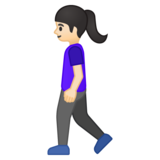
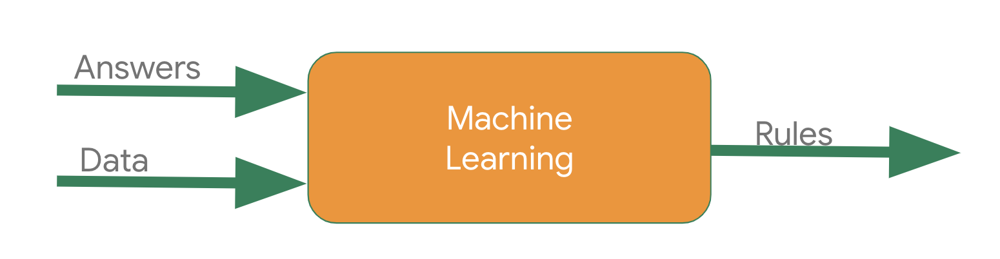

What We'll Learn
In this codelab we'll learn the basic "Hello World" of machine learning where, instead of programming explicit rules in a language such as Java or C++, we'll build a system that is trained on data to infer the rules that determine a relationship between numbers.
Consider the following problem: You're building a system that performs activity recognition for fitness tracking. You might have access to the speed at which a person is moving, and attempt to infer their activity based on this speed using a conditional:

if speed < 4:
status = WALKING
We could extend this to running with another condition:

if speed < 4:
status = WALKING
else:
status = RUNNING
In a final condition we could similarly detect cycling:

if speed < 4:
status = WALKING
else if speed < 12:
status = RUNNING
else
status = BIKING
Now consider what happens when we want to include an activity like golf? Suddenly it's less obvious how to create a rule to determine the activity.

# Now what?? :(
It's extremely difficult to write a program (expressed in code) that will give us the golfing activity. So what do you do? That's where machine learning can be used to solve the problem!
In the previous section you saw a problem where, when trying to determine the fitness activity of a user, we hit limitations in what we could write code to achieve.
Consider building applications in the traditional manner as represented in the following diagram:

You express rules in a programming language. These act on data and your program provides answers. In the case of the activity detection, the rules (the code you wrote to define types of activities) acted upon the data (the person's movement speed) in order to find an answer – the return value from the function for determining the activity status of the user (whether they were walking, running, biking, etc.).
The process for detecting this activity status via Machine Learning is very similar – only the axes are different:

Instead of trying to define the rules and express them in a programming language, you provide the answers (typically called labels) along with the data, and the machine will infer the rules that determine the relationship between the answers and the data. For example, our activity detection scenario might look like this in a machine learning context:

We gather lots of data, and label it to effectively say "This is what walking looks like", "This is what running looks like" etc. Then, the computer can infer the rules that determine, from the data, what the distinct patterns that denote a particular activity are.
Beyond being an alternative method to programming this scenario, this also gives you the ability to open up new scenarios, such as the golfing one that may not have been possible under the rules-based traditional programming approach.
In traditional programming your code compiles into a binary that is typically called a program. In machine learning, the item you create from the data and labels is called a model.
So if we go back to this diagram:

Consider the result of this to be a model, which at runtime is used like this:

You will pass the model some data, and the model will use the rules it inferred from the training to come up with a prediction – i.e. "That data looks like walking", "That data looks like biking" etc.
In the next section we'll start coding, building a very simple "Hello World" model which will have most of the building blocks that can be used in any Machine Learning Scenario!
In the next sections we'll create a very simple machine learned model that determines patterns in a set of data using machine learning techniques and a neural network.
If you've never created a Machine Learning model using TensorFlow, I'd strongly recommend you use Google Colaboratory, a browser-based environment that contains all the required dependencies. You can find the code for the rest of this lab running in a Colab.
Otherwise, the main language you will use for training models is Python, so you will need to have that installed. In addition to that you'll also need TensorFlow. Details on installing it are here. You'll also need the numpy library.
Consider the following sets of numbers. Can you see the relationship between them?
X: -1 0 1 2 3 4
Y: -2 1 4 7 10 13
As you look at them you might notice that the X value is increasing by 1 as you read left to right, and the corresponding Y value is increasing by 3. So you probably think Y=3X plus or minus something. Then you'd probably look at the zero on X and see that Y = 1, and you'd come up with the relationship Y=3X+1.
That's almost exactly how you would use code to train a model to spot the patterns between these items of data!
Now let's look at the code to do it.
How would you train a neural network to do the equivalent task? Using data! By feeding it with a set of Xs and a set of Ys, it should be able to figure out the relationship between them.
This is obviously a very different paradigm than what you might be used to, so let's step through it piece by piece.
Imports
If you are not using the Colab, and have your own Python environment set up, with TensorFlow installed and ready to use, then create a new Python file before continuing.
Let's start with our imports. Here we are importing TensorFlow and calling it tf for ease of use.
Next we import a library called numpy, which helps us to represent our data as lists easily and quickly.
The framework for defining a neural network as a set of sequential layers is called keras, so we import that too.
import tensorflow as tf
import numpy as np
from tensorflow import keras
Define and compile the neural network
Next we will create the simplest possible neural network. It has 1 layer, and that layer has 1 neuron, and the input shape to it is just 1 value.
model = tf.keras.Sequential([keras.layers.Dense(units=1, input_shape=[1])])
Next we will write the code to compile our neural network. When we do so, we have to specify 2 functions, a loss and an optimizer.
If you've seen lots of math for machine learning, here's where it's usually used, but in this case it's nicely encapsulated in functions for you. But what happens here? et's explain...
You know that in the function, the relationship between the numbers is y=3x+1.
When the computer is trying to ‘learn' that, it makes a guess...maybe y=10x+10. The loss function measures the guessed answers against the known correct answers and measures how well or how badly it did.
Next, the model uses the optimizer function to make another guess. Based on the loss function's result, it will try to minimize the loss. At this point maybe it will come up with something like y=5x+5. hile this is still pretty bad, it's closer to the correct result (i.e. the loss is lower).
The model will repeat this for the number of epochs which you will see shortly.
But first, here's how we tell it to use mean squared error for the loss and stochastic gradient descent (sgd) for the optimizer. You don't need to understand the math for these yet, but you can see that they work! :)
Over time you will learn the different and appropriate loss and optimizer functions for different scenarios.
model.compile(optimizer='sgd', loss='mean_squared_error')
Providing the data
Next up we'll feed in some data. In this case we are taking the 6 xs and 6 ys that we used earlier. You can see that the relationship between these is that y=3x+1, so where x = -1, y=-2 etc. etc.
A python library called numpy provides lots of array type data structures that are a defacto standard way of doing it. We declare that we want to use these by specifying the values as an array in numpy using `np.array[]
xs = np.array([-1.0, 0.0, 1.0, 2.0, 3.0, 4.0], dtype=float)
ys = np.array([-2.0, 1.0, 4.0, 7.0, 10.0, 13.0], dtype=float)
You've now written all of the code you need to define the neural network. The next step will be to train it to see if it can infer the patterns between these numbers and use those to create a model.